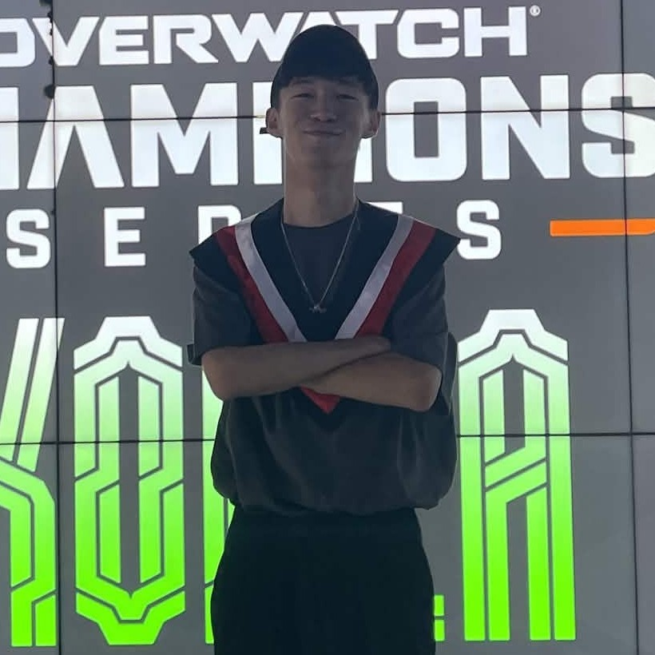

Undergraduate Student · Department of Sociology, Soochow University
I am an undergraduate student at Soochow University, majoring in Sociology with a minor in Data Science and a Micro-Program in Artificial Intelligence and Business Applications. My research centers on natural language processing (NLP) for Chinese and Korean. Coming from a sociology background, I am fascinated by how language encodes social meaning, and I see NLP as a way to model the identity, discourse, and cultural nuance embedded in text. I am especially drawn to cross-lingual and low-resource settings, since Chinese and Korean pose distinct challenges for English-centric models — an interest that is as much a genuine love of both languages as it is a research direction.
A LINE chatbot that turns a single natural-language message into five features — artist analysis, weekly charts, interactive quizzes, daily recommendations, and a personal collection. A Gemini-powered router dispatches each query, while a Korean NLP model (KcELECTRA) performs aspect-based sentiment analysis on fan opinion, backed by Bugs-chart and Naver News crawlers and SQLite / Supabase storage for personalized recommendations. Built with the LINE Messaging API. Team project (5 members). Code